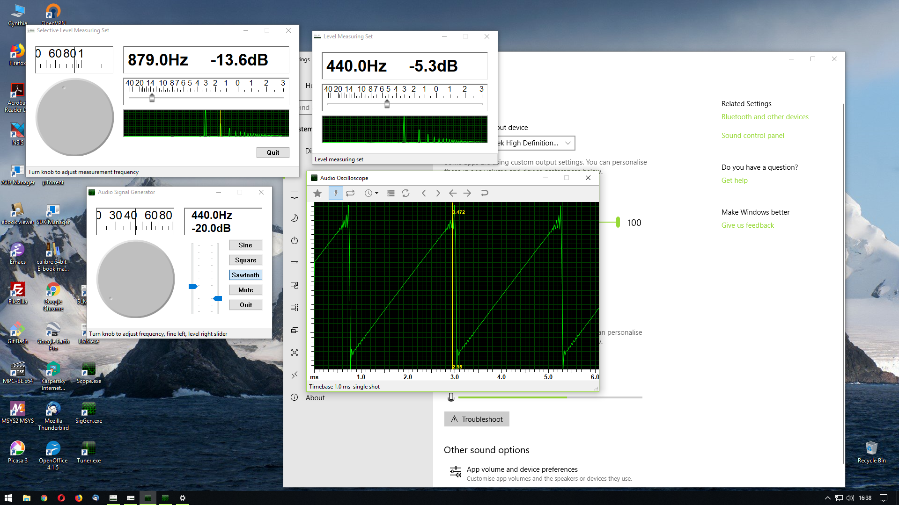
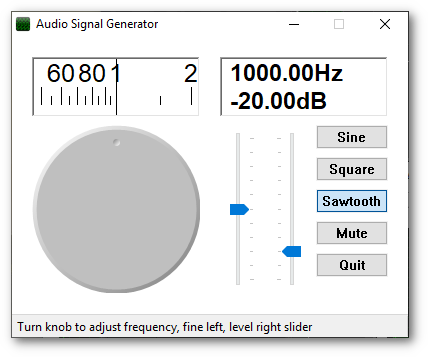
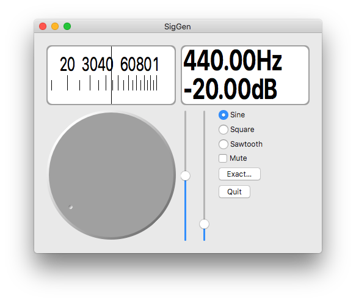
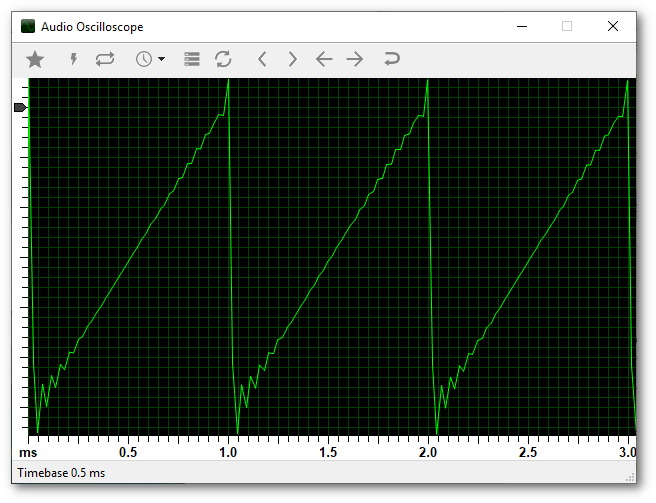
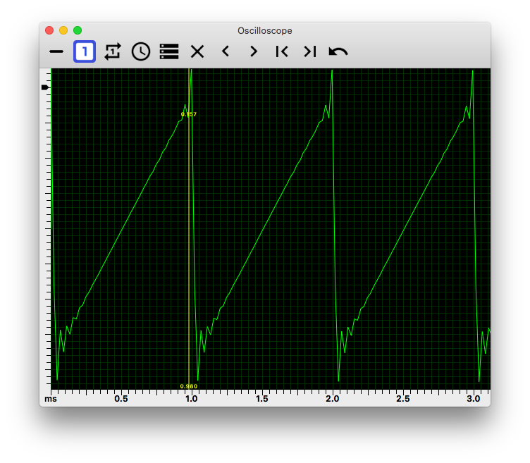
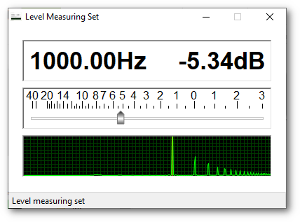
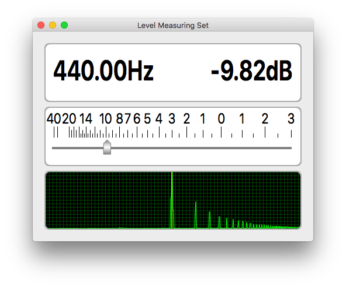
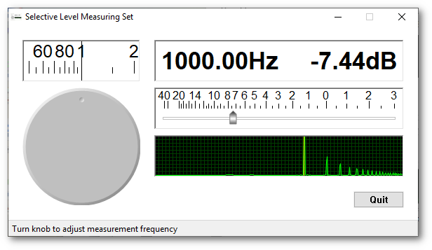

Introduction
Audiotools is a set of audio testing tools for use on a Windows or Linux PC, Mac or Android device. See also Tuner.

Tools
Downloads
Windows and Mac versions here.
Signal Generator
 

- Frequency range 10Hz - 25KHz
- Level range 0dB - -80dB
- Frequency knob
- Frequency scale
- Frequency and level display
- Sine, square and sawtooth waveforms
- Mute control
- Set exact frequency
Keyboard navigation keys
- Left - frequency knob down
- Right - frequency knob up
- Up - fine frequency up
- Down - fine frequency down
- Page Up - level up
- Page Down - level down
Using
The frequency knob responds to mouse dragging. The fine frequency and level sliders allow for fine adjustments of frequency and output level. The frequency knob is also adjustable using the left and right arrow keys. The fine frequency slider is adjustable using the up and down arrow keys, the level slider using the page up and down keys.
Downloads
Oscilloscope
  
- Timebase 0.1ms – 0.5sec
- Resolution 0.022ms @ 44100 samples/sec
- Single shot
- Adjustable sync level
- Storage
- Index
The icons on the toolbar are, from left to right:
- Bright line – Defeats the sync and single shot
- Single shot – Click the trigger icon to get a trace
- Trigger – Click for a trace
- Timebase – Drops a submenu of timebase timings
- Storage – Does not clear the display between traces
- Clear – Clears the display
- Left – Moves the trace to the left
- Right – Moves the trace to the right
- Start – Moves the trace to the start
- End – Moves the trace to the end
- Reset – Resets to default settings
Using
Use the toolbar buttons to access functionality. Clicking on the left Y scale turns on the sync level control. Clicking on the scope display turns on the cursor line, which may be shifted left and right using the left and right arrow keys. The cursor line shows the time from the start of the trace in current timebase units, and the nominal trace value at that point. There is no calibration because of the various level controls in the audio system. The move to start and reset toolbar buttons clear the sync level and the cursor.
Downloads
LMS
 
- Level -80dB – +3dB
Audio level measuring set. Measures frequency and relative level with a frequency spectrum display. Absolute level is not possible because of all the variables in the sound system.
Using
The level measuring set displays frequency and relative level with a frequency spectrum display. Input is from the currently selected audio input.
Downloads
Windows and Mac versions here.
SLMS
 
- Frequency range 10Hz - 25KHz
- Level -80dB – +3dB
Audio selective level measuring set. Measures relative level at selected frequency with a frequency spectrum display. Absolute level is not possible because of all the variables in the sound system.
Using
The selective level measuring set displays selected frequency and relative level with a frequency spectrum display. Use mouse to turn knob, or left and right keys to adjust selected frequency. Input is from the currently selected audio input.
Downloads
Windows and Mac versions here.